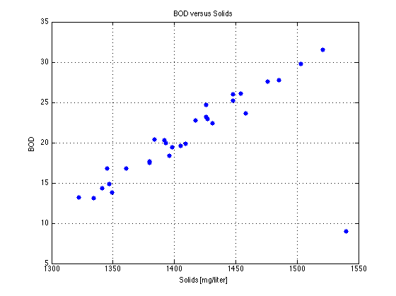
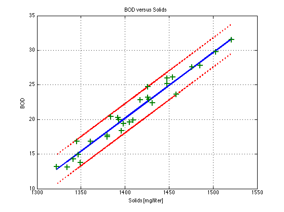

Fitting Linear Relationships
File: Ch21_DataFitting.m
Fitting linear relationships to experimental data is one of the basic tools for laboratory data analysis. This script demonstrates a simple approach using Matlab.
Contents
Data
The sample data comes from Example 21.5 of Seborg, et al. The first column is the biological oxygen demand (BOD) and the second column is solids concentration (mg/liter) for a series of daily samples of the effluent of a waste water treatment plant.
data = [ ...
17.7 1380;
23.6 1458;
13.2 1322;
25.2 1448;
13.1 1334;
27.8 1485;
29.8 1503;
9.0 1540;
14.3 1341;
26.0 1448;
23.2 1426;
22.8 1417;
20.4 1384;
17.5 1380;
18.4 1396;
16.8 1345;
13.8 1349;
19.4 1398;
24.7 1426;
16.8 1361;
14.9 1347;
27.6 1476;
26.1 1454;
20.0 1393;
22.9 1427;
22.4 1431;
19.6 1405;
31.5 1521;
19.9 1409;
20.3 1392];
Preliminary data exploration
Our expectation is that BOD ought to be related to the dissolved solids. We'll assume that a linear relationship exists of the form
[BOD] = alpha*[solids] + beta
where alpha and beta are to be determined from the data. Our first step is to examine the data to see if this is a plausible model.
BOD = data(:,1); solids = data(:,2); N = length(BOD); figure(1); clf; plot(solids,BOD,'.','Markersize',20); xlabel('Solids [mg/liter]'); ylabel('BOD'); title('BOD versus Solids'); grid;
Model fitting
Our initial conclusion is that the data appears consistent with a linear relationship, though there is at least one point that may be an outlier. Let's first do a least squares fit using all of the data.
% create data matrix where the unknown parameters are stored in x such that % Ax = b + e where are model/measurement errors and % % x(1) : alpha % x(2) : beta A = [solids ones(N,1)]; b = [BOD]; % least squares solution for x = [alpha;beta] x = A\b; % residuals e = b - A*x; s = std(e); t95 = tinv(0.975,N-2); plot(solids,BOD,'+', ... solids,A*x,'-', ... solids,A*x + t95*s, 'r-', ... solids,A*x - t95*s, 'r-', ... 'Markersize',10,'Linewidth',2); xlabel('Solids [mg/liter]'); ylabel('BOD'); title('BOD versus Solids'); legend('data','fit','+/- 95% C.I.','Location','NW'); grid;

Remove Outliers
Remove all points that lie outside of the 99% confidence interval
t99 = tinv(0.995,N-2); idx = find(abs(e) < t99*s); % data matrix A = [solids(idx) ones(length(idx),1)]; b = [BOD(idx)]; % least squares solution x = A\b; % error bounds e = b - A*x; s = std(e); t95 = tinv(0.025,N-2); % plotting plot(solids(idx),A*x,'-', ... solids(idx),A*x + t95*s, 'r:', ... solids(idx),A*x - t95*s, 'r:', ... solids(idx),BOD(idx),'+','Markersize',10,'Linewidth',2); xlabel('Solids [mg/liter]'); ylabel('BOD'); title('BOD versus Solids'); grid;
error estimates
K = 1000; xs = zeros(K,length(x)); n = size(idx,1); for k = 1:K ndx = idx(randsample(n,n,1)); A = [solids(ndx) ones(n,1)]; b = [BOD(ndx)]; % least squares solution x = A\b; xs(k,:) = x'; end